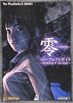

| 零～ZERO～ パーフエクトガイド ( 完全攻略本 ) |
|  | 出版社：ソフトバンク パブリッシング株式會社 編集：ザプレイステーション編集部、 エンタテインメント書籍編集部 出版日期：2002-02-01 售價：1,500 円 ( 含稅 1,575 円 ) ISBN：4-7973-1872-4 單行本：159 頁 大小：21 x 15 cm 語言：日文 | ||
| |||
| ﹣故事紹介 ﹣登場人物紹介 ﹣本書の使いかた 第一章 ～ 誘い ～ 系統 ﹣零の世界にようこそ ﹣『零』はこんなゲーム ﹣始める前の基礎知識 ﹣基本系統 ﹣移動の時操作と画面の見かた ﹣ファインダーモードの操作画面見かた ﹣氷室邸に巣くう霊たち ﹣靈氣配知 ﹣氷室邸探索心得 ﹣クイックーンを修得すべし ﹣アイテムは深紅の向く方向に ﹣手帳を讀んで人物相關圖を完成させよう ﹣スクウップで謎の手がかりを得る ﹣キーアイテムの役割を知るべし ﹣セーブは古い射影機のある場所で ﹣射影術の基礎 ﹣靈を探知し、封印するのが「射影機」だ ﹣四種類のフィルムを使いわける ﹣靈力チャージで怨靈封印 ﹣靈力ポイントはショットで決定まる ﹣浮遊靈はすばやく狙って「コアシュット」 ﹣フィラメントと振動機能で地縛靈探し ﹣封印靈を撮り、扉を開ける ﹣氷室邸のしかけを射影機で解く ﹣気に入った照片はアルバムへ保存 ﹣射影機の封印解除 ﹣靈力ポイントで射影機の封印解除 ﹣基本性能の封印を解く ﹣補助機能は靈力ポイント數にも關係 ﹣特殊能力は二周目から使える ﹣射影術を極める ﹣怨靈の動きのタイプを見極める ﹣靈力ポイントは怨靈で稼ぐ ﹣怨靈のポイント計算方法 ﹣クリア後の評價ランク ﹣クリア時間のみランクに関係 第二章 ～ 導き ～ 攻略 ﹣序章「氷室邸」 ﹣第一夜「裂き繩」 ﹣第二夜「鬼遊び」 ﹣第三夜「禍刻」 ﹣最終夜「キリエ」 第三章 ～ 秘錄 ～ データ ﹣アイテム一覽 ﹣手帳一覽 ﹣スクラップ一覽 ﹣照片一覽 ﹣靈一覽 ﹣序 章 ﹣第一夜 ﹣第二夜 ﹣第三夜 ﹣最終夜 ﹣心靈現象一覽 第四章 ～ 密事 ～ 任務模式 ﹣任務模式解說 ﹣任務模式攻略 ﹣任務一～二十 第五章 ～ 宴 ～ 付錄 ﹣『零』はこうして創られた ﹣ストーリー解說 ﹣用語解說 コラム ﹣二周目のプレイを遊び尽くす ﹣ゴーストリストを完成させよう ﹣惡夢模式をクリアする | |||

| 上一頁 | － 2 / 10 － | 下一頁 | ||